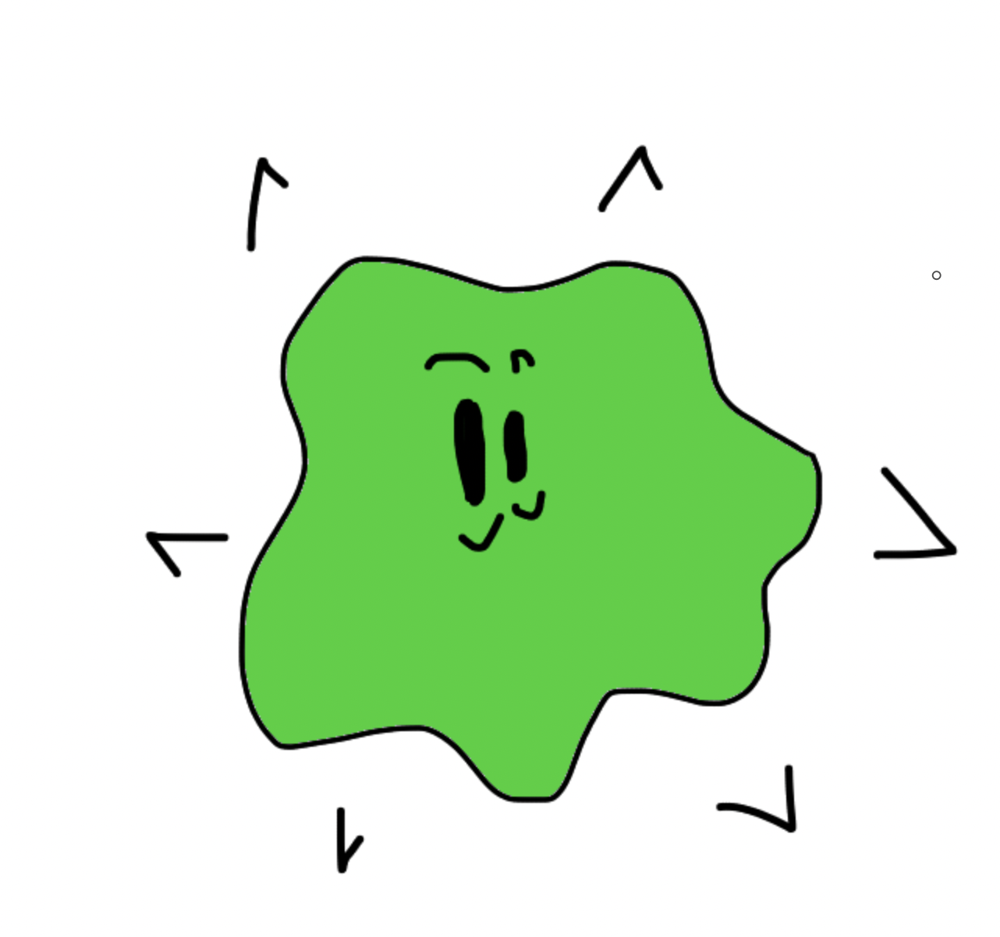

Immunology Answers
As promised in the title, these are the answers to the Immunology questions.
Dave's so excited for you!

As promised, the answers!
1. Which of the following are features of the adaptive immune system?
- antibodies and B cells
- NK cells and macrophages
- Macrophages and complement
- CTL and neutrophils
2. Which of the following are NOT functions of the innate immune system?
- Killing of infected cells
- Secretion of cytotoxic granules
- Recruiting immune cells to site of infection and mediating inflammation
- Responding to pathogens with a high degree of specificity
3. Which is NOT a way to fix the complement pathway?
- Spontaneous cleavage of C3 into C3a and C3b, which binds to microbes and leads to a cascade that culminates in the formation of a membrane attack complex
- DC sampling microbes via PRRs and cleaving C3 into C3a and C3bs
- MBL binding to lectin on microbes and leading to C3b production
- Activation of the C1 complex by the IgG antibody, resulting in a cascade that later cleaves C3
4. What do the C6-C9 complement proteins do?
- Cause inflammation to cause chemotaxis
- Lead to opsonization of the microbe
- Form the membrane attack complex
- Are cleaved to form C5
5. What is a feature of dendritic cells that macrophages do not share?
- Talking to T cells at site of infection
- Phagocytosing environment to sample for microbes
- Killing microbes
- Migrating to lymph nodes
6. Which of the following statements is FALSE?
- PRRs can be germline encoded
- Lipopolysaccharide and flagellin are both examples of PAMPs
- A single innate cell expresses one PRR
- RIG-like receptors recognize viral PAMPs
7. Which cells release Interferon-gamma?
- NK cells and Th1 cells
- NK cells and CTLs
- Th1 cells and macrophages
- Macrophages and NK cells
8. What is NOT a difference between B cell receptors and T cell receptors??
- T cell receptors are always membrane bound, while BCRs can be secreted
- TCRs only recognize peptides while BCRs recognize a wide variety of molecules
- BCRs only recognize linear epitopes while TCRs recognize discontinuous and linear epitopes
- BCR molecules do not require MHC presentation for antigen recognition, while TCRs do
9. Which of the statements about TNF-alpha is correct?
- It is produced by a variety of cells, including macrophages, and can travel to the pituitary gland to induce a fever
- It can stimulate production of cytokines such as IL-6 and IL-8
- It activates macrophages further
- TNF-alpha is an example of a DAMP
10. What types of T cells do CD4+ and CD8+ cells become, respectively?
- Helper T cells and natural killer cells
- Natural killer cells and helper T cells
- Cytotoxic T cells and helper T cells
- Helper T cells and cytotoxic T cells
11. What component is NOT used by Neutrophil Extracellular Traps (NETs)?
- Defensins
- Proteases
- Lysosomes
- Nucleic Acids